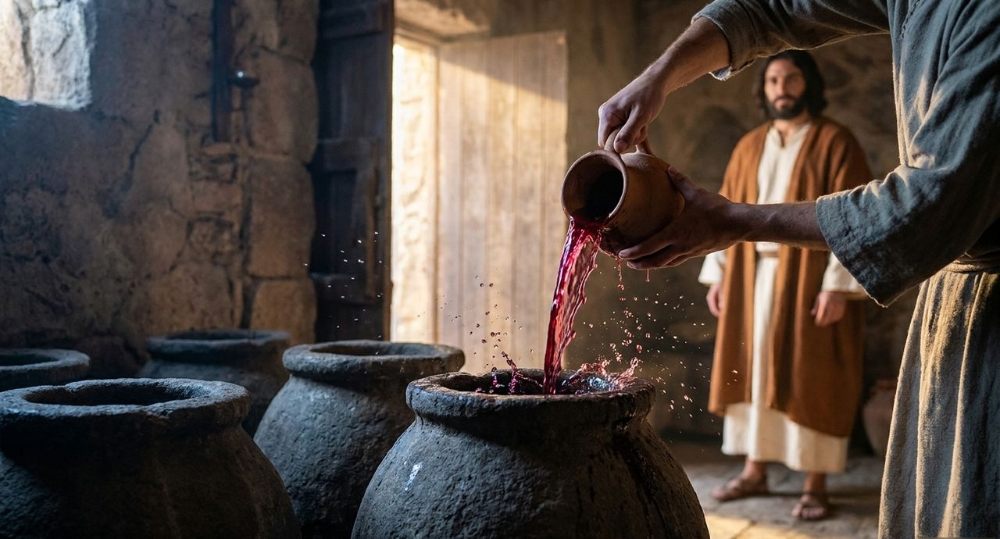

태그: sunrise_light_rays, sky, darkness, water
지금 쓰인 카드: 66장

태그: night_sky, stars, desert
지금 쓰인 카드: 58장

태그: storm_sky, lightning
지금 쓰인 카드: 28장

태그: dawn, desert, sunrise_light_rays
지금 쓰인 카드: 124장

태그: olive_tree, dusk
지금 쓰인 카드: 42장

태그: soil, drought, desert
지금 쓰인 카드: 2장

태그: spring, water, stones
지금 쓰인 카드: 23장

태그: river, reeds, dawn
지금 쓰인 카드: 15장

태그: sea, waves, storm_sky
지금 쓰인 카드: 64장

태그: sea, dawn, lake
지금 쓰인 카드: 5장

태그: wheat_field, harvest
지금 쓰인 카드: 39장

태그: fig_tree, vineyard, stones
지금 쓰인 카드: 18장

태그: mountain_peak, flowers, pasture
지금 쓰인 카드: 5장

태그: dust, sandstorm, desert, wind
지금 쓰인 카드: 103장

태그: clouds, sunrise_light_rays, sky
지금 쓰인 카드: 76장

태그: tent, fire, dusk, night_sky, camp
지금 쓰인 카드: 45장

태그: hands, tent, elder, staff
지금 쓰인 카드: 26장

태그: sheep, shepherd, wilderness_path, dust
지금 쓰인 카드: 37장

태그: stone_altar, fire, stones
지금 쓰인 카드: 39장

카드 글에 이 말이 있으면: 우물가 · 물을 길으러 · 물 긷
태그: well, clay_jar, woman
지금 쓰인 카드: 3장

카드 글에 이 말이 있으면: 별을 셀 · 하늘의 별 · 별과 같
태그: night_sky, stars, elder
지금 쓰인 카드: 4장

카드 글에 이 말이 있으면: 모리아 · 번제할 나무 · 이삭을 데리고
태그: road, mountain_peak, wilderness_path, boy
지금 쓰인 카드: 1장

카드 글에 이 말이 있으면: 숫양
태그: thorns, ram, sunrise_light_rays
지금 쓰인 카드: 1장

카드 글에 이 말이 있으면: 돌베개 · 사닥다리 · 벧엘
태그: stones, night_sky, sleep
지금 쓰인 카드: 3장

카드 글에 이 말이 있으면: 얍복 · 씨름
태그: river, night_sky, darkness
지금 쓰인 카드: 1장

카드 글에 이 말이 있으면: 목을 안고 · 서로 안고 · 안고 입맞추
태그: hands, embrace, brothers
지금 쓰인 카드: 2장

시대: 족장
태그: robe, soil

카드 글에 이 말이 있으면: 구덩이
태그: cave, pit, sunrise_light_rays
지금 쓰인 카드: 1장

태그: camel, desert, road, caravan
지금 쓰인 카드: 10장

카드 글에 이 말이 있으면: 은잔 · 자루
태그: grain, silver_cup
지금 쓰인 카드: 1장

태그: temple_stones, sunrise_light_rays, egypt
지금 쓰인 카드: 9장

카드 글에 이 말이 있으면: 벽돌 · 감독 · 노역 · 고된
태그: bricks, slavery, hands
지금 쓰인 카드: 3장

카드 글에 이 말이 있으면: 갈대 상자 · 갈대 사이
태그: reeds, river, basket
지금 쓰인 카드: 1장

카드 글에 이 말이 있으면: 바로 앞에 · 바로의 궁
태그: palace, egypt, throne
지금 쓰인 카드: 8장

태그: desert, shepherd, wilderness_path
지금 쓰인 카드: 7장

카드 글에 이 말이 있으면: 떨기나무
태그: fire, thorns, mountain_peak
지금 쓰인 카드: 3장

카드 글에 이 말이 있으면: 문설주 · 인방
태그: blood, doorpost, night_sky
지금 쓰인 카드: 1장

카드 글에 이 말이 있으면: 밤에 나오 · 밤중에 애굽
태그: night_sky, crowd, donkey, fire
지금 쓰인 카드: 1장

카드 글에 이 말이 있으면: 홍해 · 바다가 갈라 · 마른 땅으로
태그: sea, waves, path
지금 쓰인 카드: 1장

카드 글에 이 말이 있으면: 병거 · 마병
태그: army, chariot, dust, horse
지금 쓰인 카드: 1장

카드 글에 이 말이 있으면: 소고
태그: timbrel, sea, hands, festival
지금 쓰인 카드: 1장

카드 글에 이 말이 있으면: 마라 · 쓴 물
태그: water, desert, well
지금 쓰인 카드: 2장

카드 글에 이 말이 있으면: 만나를 · 만나가 · 만나와 · 만나라 · 만나는 깟씨
태그: manna, dawn, desert
지금 쓰인 카드: 4장

카드 글에 이 말이 있으면: 성막 · 회막
태그: tent, desert, tabernacle, camp
지금 쓰인 카드: 24장

카드 글에 이 말이 있으면: 성막 뜰 · 번제단 · 휘장
태그: tabernacle, stone_altar, fire, curtain
지금 쓰인 카드: 13장

카드 글에 이 말이 있으면: 어린양 · 어린 양
태그: hands, lamb, sheep, priest
지금 쓰인 카드: 17장

카드 글에 이 말이 있으면: 물두멍
태그: hands, water, laver, priest
지금 쓰인 카드: 2장

태그: oil_lamp, darkness
지금 쓰인 카드: 88장

카드 글에 이 말이 있으면: 돌판 · 십계명 · 두 판
태그: stone_tablets, mountain_peak, sunrise_light_rays
지금 쓰인 카드: 9장

카드 글에 이 말이 있으면: 금송아지 · 송아지
태그: idol, crowd, golden_calf, dust
지금 쓰인 카드: 6장

카드 글에 이 말이 있으면: 돌판을 깨 · 판을 깨뜨
태그: stones, broken, stone_tablets
지금 쓰인 카드: 2장

카드 글에 이 말이 있으면: 반석을 치 · 반석에게 · 반석에서 물
태그: stones, water, spring
지금 쓰인 카드: 2장

카드 글에 이 말이 있으면: 놋뱀
태그: bronze_serpent, pole, desert
지금 쓰인 카드: 1장

카드 글에 이 말이 있으면: 메추라기
태그: birds, tent, dust
지금 쓰인 카드: 1장

카드 글에 이 말이 있으면: 정탐 · 포도송이
태그: grapes, vineyard, men
지금 쓰인 카드: 3장

카드 글에 이 말이 있으면: 광야에서 죽 · 엎드러져
태그: stones, graves, dusk
지금 쓰인 카드: 5장

카드 글에 이 말이 있으면: 느보 · 비스가 · 바라보
태그: valley, mountain_peak, sunrise_light_rays, land
지금 쓰인 카드: 4장

카드 글에 이 말이 있으면: 열두 돌 · 돌무더기
태그: stones, memorial
지금 쓰인 카드: 1장

카드 글에 이 말이 있으면: 여리고 · 성벽이 무너
태그: city_wall, ruins, dust
지금 쓰인 카드: 2장

태그: house, clay_jar, village
지금 쓰인 카드: 5장

카드 글에 이 말이 있으면: 성문 · 장로들
태그: city_gate, elders
지금 쓰인 카드: 12장

태그: threshing_floor, harvest, wheat_field, winnowing
지금 쓰인 카드: 2장

카드 글에 이 말이 있으면: 포도주 틀
태그: wheat_field, winepress, cave, hiding
지금 쓰인 카드: 1장

카드 글에 이 말이 있으면: 삼손 · 기둥 · 다곤
태그: pillars, strength, temple_stones
지금 쓰인 카드: 1장

카드 글에 이 말이 있으면: 이삭을 줍 · 이삭 줍
태그: wheat_field, harvest, woman
지금 쓰인 카드: 1장

태그: harvest, wheat_field, sheaves
지금 쓰인 카드: 24장

카드 글에 이 말이 있으면: 타작마당 · 발치
태그: threshing_floor, night_sky, sleep
지금 쓰인 카드: 1장

카드 글에 이 말이 있으면: 실로
태그: tent, tabernacle, dusk
지금 쓰인 카드: 1장

카드 글에 이 말이 있으면: 한나 · 통곡하며 기도
태그: woman, prayer, temple_stones
지금 쓰인 카드: 0장

카드 글에 이 말이 있으면: 기름을 붓 · 기름을 부어 · 기름 뿔
태그: oil, horn, anointing, sunrise_light_rays
지금 쓰인 카드: 2장

카드 글에 이 말이 있으면: 목동 · 양을 지키
태그: shepherd, pasture, dawn, boy
지금 쓰인 카드: 0장

카드 글에 이 말이 있으면: 물매
태그: hands, stones, sling
지금 쓰인 카드: 0장

카드 글에 이 말이 있으면: 골리앗
태그: army, armor, valley
지금 쓰인 카드: 0장

카드 글에 이 말이 있으면: 아둘람 · 엔게디
태그: cave, darkness, men
지금 쓰인 카드: 1장

카드 글에 이 말이 있으면: 옷자락
태그: hands, robe, cave
지금 쓰인 카드: 1장

카드 글에 이 말이 있으면: 창과 물병 · 물병
태그: spear, clay_jar, night_sky, camp
지금 쓰인 카드: 1장

태그: city_wall, jerusalem, fortress
지금 쓰인 카드: 1장

카드 글에 이 말이 있으면: 지붕
태그: roof, dusk, palace, city
지금 쓰인 카드: 2장

카드 글에 이 말이 있으면: 백향목
태그: cedar, men, labor
지금 쓰인 카드: 0장

카드 글에 이 말이 있으면: 두 여인 · 아기 · 칼을 가져
태그: woman, child, judgment, temple_stones
지금 쓰인 카드: 0장

카드 글에 이 말이 있으면: 갈멜 산 · 엘리야가 제단
태그: fire, stone_altar, storm_sky
지금 쓰인 카드: 0장

카드 글에 이 말이 있으면: 로뎀
태그: desert, broom_tree, sleep, drought
지금 쓰인 카드: 0장

카드 글에 이 말이 있으면: 굴 어귀 · 세미한
태그: cave, sunrise_light_rays, mountain_peak
지금 쓰인 카드: 0장

카드 글에 이 말이 있으면: 앗수르 왕 · 앗수르 군대 · 산헤립
태그: army, armor, spear, desert
지금 쓰인 카드: 0장

카드 글에 이 말이 있으면: 공성 · 포위 · 라기스
태그: army, city_wall, siege
지금 쓰인 카드: 0장

태그: ruins, fire, city_wall, smoke
지금 쓰인 카드: 1장

태그: chains, captives, road, desert
지금 쓰인 카드: 1장

카드 글에 이 말이 있으면: 버드나무 · 수금을 걸
태그: lyre, river, willow
지금 쓰인 카드: 0장

태그: city_gate, babylon
지금 쓰인 카드: 0장

카드 글에 이 말이 있으면: 토기장이
태그: hands, clay_jar, potter
지금 쓰인 카드: 2장

카드 글에 이 말이 있으면: 옹기를 깨 · 옹기
태그: clay_jar, broken, soil
지금 쓰인 카드: 0장

카드 글에 이 말이 있으면: 두루마리를 태 · 화로 · 칼로 베
태그: scroll, fire, palace
지금 쓰인 카드: 1장

카드 글에 이 말이 있으면: 구덩이에 · 웅덩이에
태그: pit, rope, cave, darkness
지금 쓰인 카드: 0장

카드 글에 이 말이 있으면: 마른 뼈
태그: bones, valley, dust, sunrise_light_rays
지금 쓰인 카드: 0장

카드 글에 이 말이 있으면: 사자 굴 · 사자들의 입 · 사자 굴
태그: lion, cave, sunrise_light_rays, darkness
지금 쓰인 카드: 0장

카드 글에 이 말이 있으면: 풀무 · 불 가운데
태그: fire, furnace
지금 쓰인 카드: 0장

카드 글에 이 말이 있으면: 성벽을 쌓 · 성벽을 건축 · 성벽을 중수
태그: city_wall, builder, stones, dusk
지금 쓰인 카드: 0장

태그: night_sky, stars, man
지금 쓰인 카드: 6장

카드 글에 이 말이 있으면: 수금 · 비파 · 찬양하 · 노래하
태그: lyre, hands
지금 쓰인 카드: 3장

카드 글에 이 말이 있으면: 잿더미 · 재를 뒤집 · 재 가운데
태그: ashes, hands, sorrow
지금 쓰인 카드: 1장

카드 글에 이 말이 있으면: 세 친구 · 욥의 친구
태그: friends, desert, sorrow
지금 쓰인 카드: 1장

카드 글에 이 말이 있으면: 회오리바람 · 폭풍 가운데
태그: storm_sky, whirlwind, desert
지금 쓰인 카드: 0장

카드 글에 이 말이 있으면: 사슴
태그: deer, water, stream
지금 쓰인 카드: 0장

태그: sheep, pasture, water
지금 쓰인 카드: 5장

카드 글에 이 말이 있으면: 음침한 골짜기
태그: valley, shepherd, darkness, sunrise_light_rays
지금 쓰인 카드: 1장

태그: temple_stones, steps, pilgrim
지금 쓰인 카드: 6장

태그: threshing_floor, chaff, wind, winnowing
지금 쓰인 카드: 3장

태그: tree, river, water
지금 쓰인 카드: 0장

카드 글에 이 말이 있으면: 반석 위에 집 · 모래 위에 집
태그: house, ruins, storm_sky, rock
지금 쓰인 카드: 0장

카드 글에 이 말이 있으면: 수고 · 해 아래
태그: labor, dusk, man
지금 쓰인 카드: 11장

태그: vineyard, flowers, stones
지금 쓰인 카드: 8장

태그: city_wall, watchman, dawn
지금 쓰인 카드: 12장

태그: fishing_boat, sea, dawn
지금 쓰인 카드: 5장

태그: fishing_boat, net, sea
지금 쓰인 카드: 3장

카드 글에 이 말이 있으면: 그물이 찢 · 물고기가 많
태그: net, fish, hands
지금 쓰인 카드: 1장

카드 글에 이 말이 있으면: 풍랑 · 광풍
태그: fishing_boat, storm_sky, waves
지금 쓰인 카드: 3장

태그: crowd, pasture, hill
지금 쓰인 카드: 7장

카드 글에 이 말이 있으면: 오병이어 · 떡 다섯 · 물고기 두
태그: bread, fish, basket
지금 쓰인 카드: 1장

태그: scroll, synagogue, sunrise_light_rays
지금 쓰인 카드: 40장

카드 글에 이 말이 있으면: 우물곁 · 물동이
태그: well, clay_jar
지금 쓰인 카드: 1장

카드 글에 이 말이 있으면: 향유 · 옥합
태그: oil, feet, alabaster
지금 쓰인 카드: 1장

카드 글에 이 말이 있으면: 삭개오 · 뽕나무
태그: tree, man, road
지금 쓰인 카드: 1장

카드 글에 이 말이 있으면: 겟세마네
태그: olive_tree, prayer, night_sky
지금 쓰인 카드: 1장

카드 글에 이 말이 있으면: 닭이 울 · 불을 쬐
태그: fire, courtyard, night_sky, rooster
지금 쓰인 카드: 2장

카드 글에 이 말이 있으면: 십자가
태그: cross, storm_sky, hill
지금 쓰인 카드: 10장

카드 글에 이 말이 있으면: 빈 무덤 · 무덤 · 살아나 · 부활
태그: rock_tomb, sunrise_light_rays, dawn
지금 쓰인 카드: 13장

카드 글에 이 말이 있으면: 다락방 · 다락에
태그: oil_lamp, room, prayer
지금 쓰인 카드: 5장

카드 글에 이 말이 있으면: 미문 · 못 걷는
태그: temple_stones, gate, beggar, sunrise_light_rays
지금 쓰인 카드: 3장

카드 글에 이 말이 있으면: 스데반
태그: robe, dust, stones
지금 쓰인 카드: 6장

카드 글에 이 말이 있으면: 다메섹 도상 · 다메섹으로 가
태그: road, sunrise_light_rays, dust
지금 쓰인 카드: 5장

카드 글에 이 말이 있으면: 광주리
태그: city_wall, basket, rope, night_sky
지금 쓰인 카드: 4장

태그: road, olive_tree, men
지금 쓰인 카드: 80장

카드 글에 이 말이 있으면: 옥에 가 · 옥에 갇 · 옥문 · 감옥 · 매인 자 · 매임 · 갇힌
태그: prison, chains, sunrise_light_rays
지금 쓰인 카드: 23장

카드 글에 이 말이 있으면: 아덴 · 아레오바고
태그: ruins, city, temple_stones
지금 쓰인 카드: 2장

태그: ship, harbor, sea
지금 쓰인 카드: 21장

카드 글에 이 말이 있으면: 파선 · 난파 · 멜리데
태그: ship, storm_sky, waves, shipwreck
지금 쓰인 카드: 4장

카드 글에 이 말이 있으면: 떡을 떼 · 주의 만찬 · 떡을 가지사
태그: bread, hands, table
지금 쓰인 카드: 8장

카드 글에 이 말이 있으면: 밧모
태그: sea, rock, man, sunrise_light_rays
지금 쓰인 카드: 2장

카드 글에 이 말이 있으면: 생명수 · 생명나무 · 생명의 강
태그: river, tree, sunrise_light_rays
지금 쓰인 카드: 3장

카드 글에 이 말이 있으면: 구름 기둥 · 구름기둥
태그: clouds, pillar, desert, tent
지금 쓰인 카드: 1장

카드 글에 이 말이 있으면: 시내 산 · 시내산 · 산에 강림 · 연기
태그: mountain_peak, storm_sky, fire, smoke
지금 쓰인 카드: 3장

카드 글에 이 말이 있으면: 은 나팔 · 나팔 둘
태그: trumpet, priest, tent, camp
지금 쓰인 카드: 1장

카드 글에 이 말이 있으면: 언약궤 · 법궤
태그: ark, priest, river
지금 쓰인 카드: 1장

카드 글에 이 말이 있으면: 항아리 속에 횃불 · 항아리를 깨
태그: fire, clay_jar, night_sky, army
지금 쓰인 카드: 0장

카드 글에 이 말이 있으면: 블레셋
태그: army, philistine, dusk
지금 쓰인 카드: 0장

카드 글에 이 말이 있으면: 불이 하늘에서 · 성전 봉헌 · 낙성식
태그: temple_stones, stone_altar, smoke, priest, sunrise_light_rays
지금 쓰인 카드: 0장

카드 글에 이 말이 있으면: 수산 · 아하수에로 · 왕궁
태그: palace, persia, pillars, throne
지금 쓰인 카드: 0장

카드 글에 이 말이 있으면: 백부장 · 천부장 · 로마 군인 · 군병들이
태그: army, roman, spear, fire, night_sky
지금 쓰인 카드: 7장

태그: scroll, hands, oil_lamp, letter
지금 쓰인 카드: 45장

카드 글에 이 말이 있으면: 에디오피아 내시 · 내시가 수레
태그: road, chariot, scroll, desert
지금 쓰인 카드: 0장

카드 글에 이 말이 있으면: 바벨탑 · 바벨이라 · 탑을 쌓 · 역청으로
태그: tower, bricks, city, labor
지금 쓰인 카드: 1장

카드 글에 이 말이 있으면: 홍수 · 방주
태그: ark_noah, rain, flood, sea, storm_sky
지금 쓰인 카드: 1장

카드 글에 이 말이 있으면: 비둘기가 감람 · 감람나무 잎
태그: dove, olive_leaf, mountain_peak, sunrise_light_rays
지금 쓰인 카드: 0장

카드 글에 이 말이 있으면: 무지개
태그: rainbow, clouds, stone_altar, smoke, pasture
지금 쓰인 카드: 0장

카드 글에 이 말이 있으면: 흑암이 애굽 · 흑암이 있
태그: night_sky, darkness, house, oil_lamp
지금 쓰인 카드: 1장

시대: 애굽·출애굽
태그: table, men, bread, house

카드 글에 이 말이 있으면: 무교병 · 누룩 없는
태그: bread, oven, fire
지금 쓰인 카드: 2장

카드 글에 이 말이 있으면: 애굽에서 나오 · 애굽 땅에서 나오 · 라암셋
태그: crowd, sheep, dust, sunrise_light_rays
지금 쓰인 카드: 2장

카드 글에 이 말이 있으면: 바닷가에 장막 · 뒤를 따르
태그: crowd, sea, army, dust
지금 쓰인 카드: 1장

카드 글에 이 말이 있으면: 손을 바다 위로 · 바다 위로 내밀 · 동풍
태그: hands, staff, sea, storm_sky
지금 쓰인 카드: 1장

카드 글에 이 말이 있으면: 아말렉 · 아론과 훌
태그: hill, army, elder, stones
지금 쓰인 카드: 1장

카드 글에 이 말이 있으면: 만나를 · 만나가 · 만나와 · 메추라기
태그: manna, birds, hands, dawn
지금 쓰인 카드: 3장

카드 글에 이 말이 있으면: 반석을 치 · 반석에서 물
태그: rock, water, staff
지금 쓰인 카드: 2장

카드 글에 이 말이 있으면: 이드로
태그: embrace, elder, tent, camel
지금 쓰인 카드: 1장

카드 글에 이 말이 있으면: 백성을 재판 · 아침부터 저녁까지
태그: tent, crowd, elder, sorrow
지금 쓰인 카드: 0장

카드 글에 이 말이 있으면: 경계를 정 · 산 아래에 서
태그: mountain_peak, storm_sky, crowd, stones
지금 쓰인 카드: 1장

카드 글에 이 말이 있으면: 언약의 피 · 피를 뿌리
태그: blood, stone_altar, pillars
지금 쓰인 카드: 1장

시대: 광야·성막
태그: elders, table, sunrise_light_rays

카드 글에 이 말이 있으면: 구름 속으로
태그: mountain_peak, clouds, man, staff
지금 쓰인 카드: 4장

카드 글에 이 말이 있으면: 언약궤 · 속죄소 · 지성소 · 법궤
태그: ark, darkness, sunrise_light_rays
지금 쓰인 카드: 6장

카드 글에 이 말이 있으면: 진설병 · 떡상
태그: bread, table, tabernacle
지금 쓰인 카드: 1장

카드 글에 이 말이 있으면: 등잔대
태그: oil_lamp, menorah, darkness
지금 쓰인 카드: 4장

카드 글에 이 말이 있으면: 분향단 · 분향하 · 향단
태그: smoke, altar, curtain, tabernacle
지금 쓰인 카드: 2장

카드 글에 이 말이 있으면: 널판 · 덮개
태그: tabernacle, tent, curtain
지금 쓰인 카드: 2장

카드 글에 이 말이 있으면: 자원하는 · 예물을 가져
태그: crowd, gold, yarn
지금 쓰인 카드: 2장

카드 글에 이 말이 있으면: 요단을 건너 · 언약궤 · 법궤
태그: ark, priest, river, dust
지금 쓰인 카드: 0장

카드 글에 이 말이 있으면: 브살렐 · 금을 쳐서
태그: hands, gold, labor
지금 쓰인 카드: 3장

카드 글에 이 말이 있으면: 금방울 · 석류
태그: robe, priest
지금 쓰인 카드: 2장

카드 글에 이 말이 있으면: 흉패
태그: gems, priest
지금 쓰인 카드: 1장

카드 글에 이 말이 있으면: 호마노 · 에봇
태그: gems, priest, robe
지금 쓰인 카드: 2장

카드 글에 이 말이 있으면: 머리에 붓 · 머리에 부어
태그: oil, anointing, priest
지금 쓰인 카드: 0장

카드 글에 이 말이 있으면: 번제
태그: fire, stone_altar, priest
지금 쓰인 카드: 3장

카드 글에 이 말이 있으면: 아사셀 · 속죄일
태그: goat, desert, man
지금 쓰인 카드: 3장

시대: 광야·성막
태그: clouds, fire, tabernacle

카드 글에 이 말이 있으면: 에덴
태그: garden, river, trees, sunrise_light_rays
지금 쓰인 카드: 3장

카드 글에 이 말이 있으면: 선악을 알게 · 동산 중앙
태그: tree, pasture, sunrise_light_rays
지금 쓰인 카드: 2장

카드 글에 이 말이 있으면: 가인 · 아벨
태그: stone_altar, smoke, wheat_field, lamb
지금 쓰인 카드: 3장

카드 글에 이 말이 있으면: 가인이 여호와 앞을 떠나 · 놋 땅
태그: man, desert, dusk
지금 쓰인 카드: 1장

카드 글에 이 말이 있으면: 방주 · 역청
태그: labor, wood, tools
지금 쓰인 카드: 1장

카드 글에 이 말이 있으면: 갈대아 우르
태그: city, river, ziggurat
지금 쓰인 카드: 2장

카드 글에 이 말이 있으면: 마므레 · 세 사람이 맞은편 · 장막 문에 앉
태그: tent, tree, men, elder
지금 쓰인 카드: 1장

시대: 족장
태그: fire, night_sky, city

카드 글에 이 말이 있으면: 하갈 · 이스마엘 · 가죽부대
태그: desert, child, water
지금 쓰인 카드: 2장

카드 글에 이 말이 있으면: 들에 나가 묵상 · 낙타들이 오
태그: camel, man, dusk
지금 쓰인 카드: 1장

카드 글에 이 말이 있으면: 팥죽 · 장자의 명분
태그: bread, bow, clay_jar
지금 쓰인 카드: 1장

카드 글에 이 말이 있으면: 얼룩 · 아롱진 · 껍질을 벗겨 · 물구유
태그: sheep, water, staff
지금 쓰인 카드: 1장

카드 글에 이 말이 있으면: 기둥으로 세우 · 기둥 위에 기름
태그: stones, oil, dawn
지금 쓰인 카드: 2장

카드 글에 이 말이 있으면: 손을 엇바꾸 · 므낫세와 에브라임
태그: elder, child, hands
지금 쓰인 카드: 2장

카드 글에 이 말이 있으면: 막벨라
태그: cave, crowd, graves
지금 쓰인 카드: 3장

카드 글에 이 말이 있으면: 곡식 단 · 단이 일어
태그: wheat_field, sheaves
지금 쓰인 카드: 1장

카드 글에 이 말이 있으면: 보디발
태그: house, egypt, curtain
지금 쓰인 카드: 1장

카드 글에 이 말이 있으면: 옥에 가 · 옥에 갇 · 옥중 · 감옥
태그: prison, chains, darkness
지금 쓰인 카드: 8장

카드 글에 이 말이 있으면: 술 맡은
태그: cup, grapes, hands
지금 쓰인 카드: 1장

카드 글에 이 말이 있으면: 일곱 암소 · 살진 소 · 파리한 소
태그: cattle, river, reeds
지금 쓰인 카드: 0장

카드 글에 이 말이 있으면: 곡식을 저장 · 곡물을 쌓 · 창고
태그: grain, labor, egypt
지금 쓰인 카드: 4장

카드 글에 이 말이 있으면: 인장 반지 · 금 사슬 · 총리
태그: hands, egypt, ring
지금 쓰인 카드: 1장

카드 글에 이 말이 있으면: 땅에 엎드려 절
태그: men, bowing, egypt
지금 쓰인 카드: 1장

카드 글에 이 말이 있으면: 수레를 보내 · 수레들
태그: cart, donkey, crowd, dust
지금 쓰인 카드: 1장

카드 글에 이 말이 있으면: 고센
태그: pasture, river, sheep, village
지금 쓰인 카드: 3장

카드 글에 이 말이 있으면: 산파
태그: hands, baby, darkness
지금 쓰인 카드: 1장

카드 글에 이 말이 있으면: 바로의 딸
태그: woman, river, reeds
지금 쓰인 카드: 0장

카드 글에 이 말이 있으면: 개구리
태그: frogs, house, oven
지금 쓰인 카드: 1장

시대: 애굽·출애굽
태그: storm_sky, fire, hail

카드 글에 이 말이 있으면: 메뚜기
태그: locusts, storm_sky, wheat_field
지금 쓰인 카드: 1장

카드 글에 이 말이 있으면: 구름 기둥 · 구름기둥
태그: clouds, pillar, desert, tent
지금 쓰인 카드: 3장

카드 글에 이 말이 있으면: 시내 산 · 시내산 · 산에 강림 · 연기
태그: mountain_peak, storm_sky, fire, smoke
지금 쓰인 카드: 4장

카드 글에 이 말이 있으면: 은 나팔 · 나팔 둘
태그: trumpet, priest, tent, camp
지금 쓰인 카드: 0장

카드 글에 이 말이 있으면: 요단을 건너 · 언약궤 · 법궤
태그: ark, priest, river
지금 쓰인 카드: 0장

카드 글에 이 말이 있으면: 항아리 속에 횃불 · 항아리를 깨
태그: fire, clay_jar, night_sky, army
지금 쓰인 카드: 0장

카드 글에 이 말이 있으면: 블레셋
태그: army, philistine, dusk
지금 쓰인 카드: 1장

카드 글에 이 말이 있으면: 불이 하늘에서 · 성전 봉헌 · 낙성식
태그: temple_stones, stone_altar, smoke, priest
지금 쓰인 카드: 0장

카드 글에 이 말이 있으면: 수산 · 아하수에로 · 왕궁
태그: palace, persia, pillars
지금 쓰인 카드: 0장

카드 글에 이 말이 있으면: 백부장 · 천부장 · 로마 군인 · 군병들이
태그: army, roman, spear
지금 쓰인 카드: 1장

태그: scroll, hands, oil_lamp, letter
지금 쓰인 카드: 55장

카드 글에 이 말이 있으면: 에디오피아 내시 · 내시가 수레
태그: road, chariot, scroll, desert
지금 쓰인 카드: 2장

카드 글에 이 말이 있으면: 바벨탑 · 바벨이라 · 탑을 쌓 · 역청으로
태그: tower, bricks, city, labor
지금 쓰인 카드: 0장

카드 글에 이 말이 있으면: 홍수 · 방주
태그: ark_noah, rain, flood, sea, storm_sky
지금 쓰인 카드: 1장

카드 글에 이 말이 있으면: 비둘기가 감람 · 감람나무 잎
태그: dove, olive_leaf, mountain_peak
지금 쓰인 카드: 1장

카드 글에 이 말이 있으면: 무지개
태그: rainbow, clouds, stone_altar, smoke
지금 쓰인 카드: 1장

시대: 정착·사사
태그: army, modern

시대: 정착·사사
태그: army, men

카드 글에 이 말이 있으면: 병거 · 기손
태그: chariot, mud, river
지금 쓰인 카드: 0장

카드 글에 이 말이 있으면: 기드온 · 항아리와 횃불
태그: trumpet, clay_jar, night_sky, army
지금 쓰인 카드: 0장

카드 글에 이 말이 있으면: 진을 치 · 두 진영
태그: army, valley, sunrise_light_rays
지금 쓰인 카드: 0장

카드 글에 이 말이 있으면: 길보아
태그: spear, shield, dusk
지금 쓰인 카드: 0장

태그: fire, city_wall, watchman, night_sky
지금 쓰인 카드: 4장

카드 글에 이 말이 있으면: 라기스 · 포위하
태그: army, archers, siege, city_wall
지금 쓰인 카드: 0장

카드 글에 이 말이 있으면: 성문에서 싸우 · 성문 앞에서
태그: army, shield, city_gate, dust
지금 쓰인 카드: 0장

카드 글에 이 말이 있으면: 노래하는 자들을 군대 · 찬송하는 자 · 여호사밧
태그: singers, army, sunrise_light_rays
지금 쓰인 카드: 0장

카드 글에 이 말이 있으면: 불사르 · 불태우 · 함락
태그: ruins, fire, city, night_sky
지금 쓰인 카드: 0장

카드 글에 이 말이 있으면: 불말 · 불병거
태그: horse, chariot, fire, clouds
지금 쓰인 카드: 0장

카드 글에 이 말이 있으면: 대장장이 · 보습
태그: fire, labor, hands
지금 쓰인 카드: 0장

카드 글에 이 말이 있으면: 로마 군대 · 군대가 · 병사들이 · 군사들이
태그: army, roman, road
지금 쓰인 카드: 6장

태그: ruins, dawn, smoke, pasture
지금 쓰인 카드: 0장

카드 글에 이 말이 있으면: 초막
태그: booth, oil_lamp, dusk
지금 쓰인 카드: 2장

카드 글에 이 말이 있으면: 첫 열매 · 맏물
태그: basket, grapes, wheat_field, priest
지금 쓰인 카드: 3장

카드 글에 이 말이 있으면: 칠칠절 · 오순절 · 떡 두 개
태그: bread, wheat_field
지금 쓰인 카드: 4장

카드 글에 이 말이 있으면: 춤추 · 뛰놀
태그: ark, dance, priest, trumpet
지금 쓰인 카드: 0장

카드 글에 이 말이 있으면: 미리암 · 소고
태그: timbrel, woman, dance, sea
지금 쓰인 카드: 0장

카드 글에 이 말이 있으면: 제금 · 비파 · 노래하는 자 · 찬양대
태그: singers, lyre, priest, temple_stones
지금 쓰인 카드: 0장

카드 글에 이 말이 있으면: 초하루 · 뿔나팔 · 양각 나팔
태그: shofar, city_wall, night_sky, moon
지금 쓰인 카드: 0장

카드 글에 이 말이 있으면: 순례 · 올라가는 노래 · 절기에 올라
태그: crowd, road, mountain_peak, family
지금 쓰인 카드: 0장

카드 글에 이 말이 있으면: 율법책 · 낭독 · 율법을 읽
태그: scroll, crowd, sunrise_light_rays
지금 쓰인 카드: 0장

카드 글에 이 말이 있으면: 성벽을 봉헌 · 성벽 위로
태그: singers, city_wall, lyre
지금 쓰인 카드: 0장

카드 글에 이 말이 있으면: 유월절
태그: lamb, crowd, stone_altar, priest
지금 쓰인 카드: 1장

카드 글에 이 말이 있으면: 부림절
태그: table, feast, palace
지금 쓰인 카드: 0장

카드 글에 이 말이 있으면: 가나의 혼인 · 가나에서 · 물로 된 포도주 · 돌항아리
태그: clay_jar, wine, jesus
지금 쓰인 카드: 1장

카드 글에 이 말이 있으면: 종려 · 호산나
태그: palm, robe, road
지금 쓰인 카드: 1장

시대: 사도행전·서신
태그: prayer, smoke, hands

태그: millstone, hands, grain
지금 쓰인 카드: 1장

태그: bread, oven, fire
지금 쓰인 카드: 0장

태그: loom, hands, yarn
지금 쓰인 카드: 0장

태그: woman, clay_jar, city_wall, dawn
지금 쓰인 카드: 0장

카드 글에 이 말이 있으면: 자녀에게 가르 · 네 자녀 · 아들아 내
태그: child, elder, house
지금 쓰인 카드: 1장

태그: market, city_gate, donkey, grain
지금 쓰인 카드: 2장

태그: sackcloth, ashes, sorrow
지금 쓰인 카드: 0장

카드 글에 이 말이 있으면: 돌을 굴려 · 무덤 문
태그: rock_tomb, stone
지금 쓰인 카드: 2장

태그: net, hands, sea
지금 쓰인 카드: 0장

카드 글에 이 말이 있으면: 목수
태그: tools, wood, labor
지금 쓰인 카드: 0장

태그: child, village, dust
지금 쓰인 카드: 2장

카드 글에 이 말이 있으면: 진 밖 · 나병
태그: tent, desert, man, sorrow
지금 쓰인 카드: 4장

카드 글에 이 말이 있으면: 구걸 · 걸인 · 거지 · 맹인이 · 못 걷는
태그: beggar, hands, road
지금 쓰인 카드: 4장

태그: oil_lamp, hands, darkness
지금 쓰인 카드: 6장

카드 글에 이 말이 있으면: 밭 모퉁이 · 이삭을
태그: wheat_field, hands, harvest
지금 쓰인 카드: 5장

태그: city_wall, jerusalem, valley, men
지금 쓰인 카드: 33장

카드 글에 이 말이 있으면: 성전 뜰 · 성전에서 · 성전에 올라 · 헤롯 성전
태그: temple_stones, jerusalem, courtyard
지금 쓰인 카드: 12장

태그: fortress, hill, donkey, road
지금 쓰인 카드: 1장

카드 글에 이 말이 있으면: 니느웨
태그: city_wall, city_gate, river
지금 쓰인 카드: 1장

태그: babylon, city, river, ziggurat
지금 쓰인 카드: 0장

카드 글에 이 말이 있으면: 수산 궁
태그: palace, persia, pillars, steps
지금 쓰인 카드: 0장

태그: sea, salt, desert, mountain_peak
지금 쓰인 카드: 6장

태그: palm, spring, water
지금 쓰인 카드: 0장

태그: valley, road, men, sheep
지금 쓰인 카드: 20장

태그: desert, road, tree, sunrise_light_rays
지금 쓰인 카드: 28장

시대: 자연·하늘
태그: mountain_peak, clouds

태그: harbor, ship, sea, rock
지금 쓰인 카드: 8장

태그: well, tree, clay_jar
지금 쓰인 카드: 1장

태그: river, valley, sunrise_light_rays
지금 쓰인 카드: 14장

태그: mountain_peak, sea, sunrise_light_rays
지금 쓰인 카드: 13장